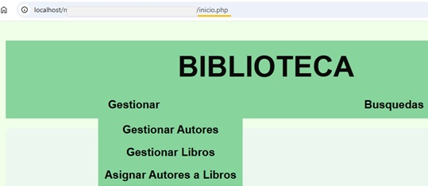
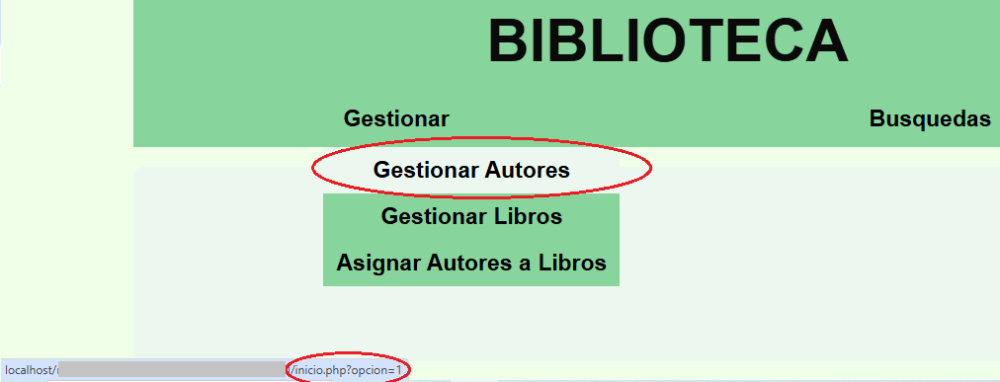

El archivo inicio.php como controlador
El funcionamiento coordinado del sistema lo realiza el archivo inicio.php, que actúa como el "controlador" principal de la aplicación web.

Pasos principales:
- Preparación del entorno: inicio.php captura esta variable
$opciony carga todos los archivos necesarios (conexion.php, Autor.php, etc.) usandorequire_onceque incerta el código del archivo de manera similar aincludea diferencia de include, esta instrucción carga una sola vez el archivo y si existe algún error se detiene la ejecución.
Ver el código de inicio.php
- Recepción de la petición: El usuario hace clic en el menú y se envía una variable por la URL usando GET (ej.
?opcion=1). - Enrutamiento: Mediante una estructura
switch, se evalúa el valor de$opcionpara llamar al método correspondiente (Agregar, Modificar, Eliminar o Mostrar).

El usuario va a la opción Gestionar Autores,con el valor de opcion igual a 1 va al archivo inicio.php, el valor de opcion se toma por GET.
Luego se pasa la ejecución al switch, ingresa en case 1: y llama al método Mostrar de la clase Autor que muestra la tabla Autor.
Al final de la tabla se tiene tres opciones Agregar Autor, Modificar Autor, Eliminar Autor.
Si selecciona Agregar Autor, por href se envia al archivo inicio.php el valor de opcion igual a 11, vuelve al switch y se llama al método Agregar de la clase Autor.

Método Agregar de la clase Autor

if(isset($_POST['si']))la función isset verifica si el botón Agregar fue seleccionadoheader(“Location: …...”)instrucción que se usa para redirigir al usuario de una página web a otra diferente. El programa se redirige a inicio.php con la opcion 1, que muestra nuevamente la tabla y se puede ver el nuevo autor ingresado.
Método Modificar de la clase Autor


Método Eliminar de la clase Autor

Conclusión
En todo programa CRUD, los métodos Mostrar, Agregar, Modificar y Eliminar siguen una estructura lógica basada en Programación Orientada a Objetos y consultas SQL seguras.